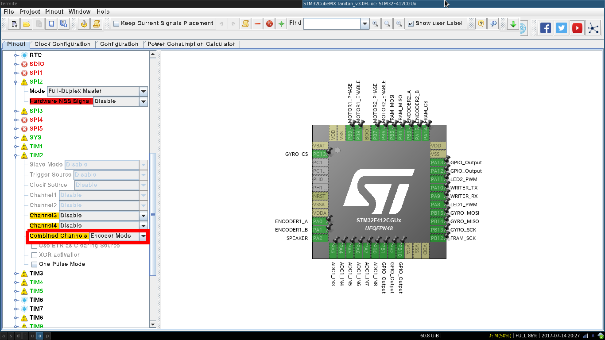
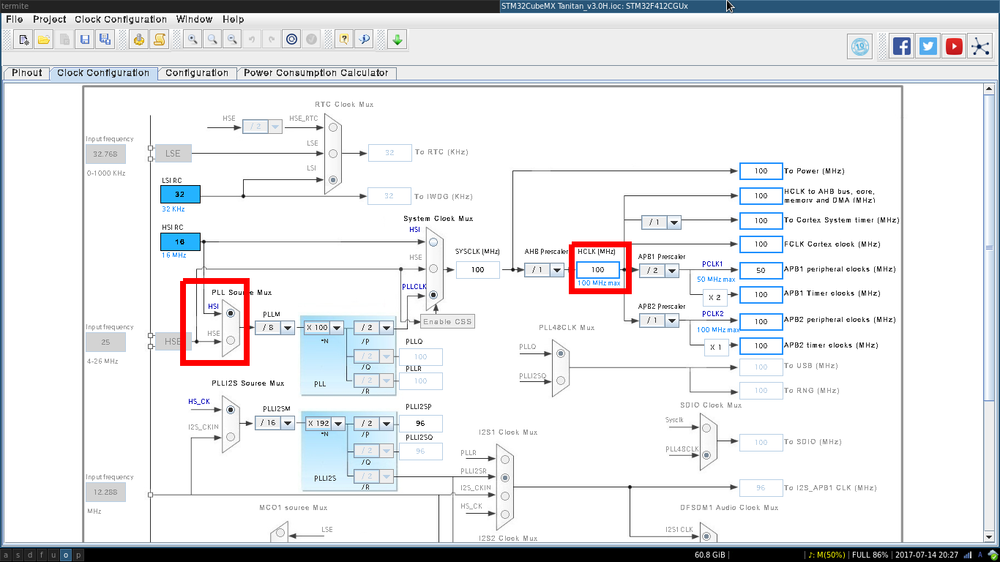
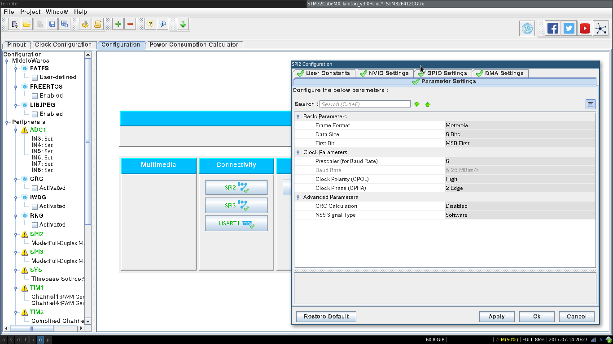
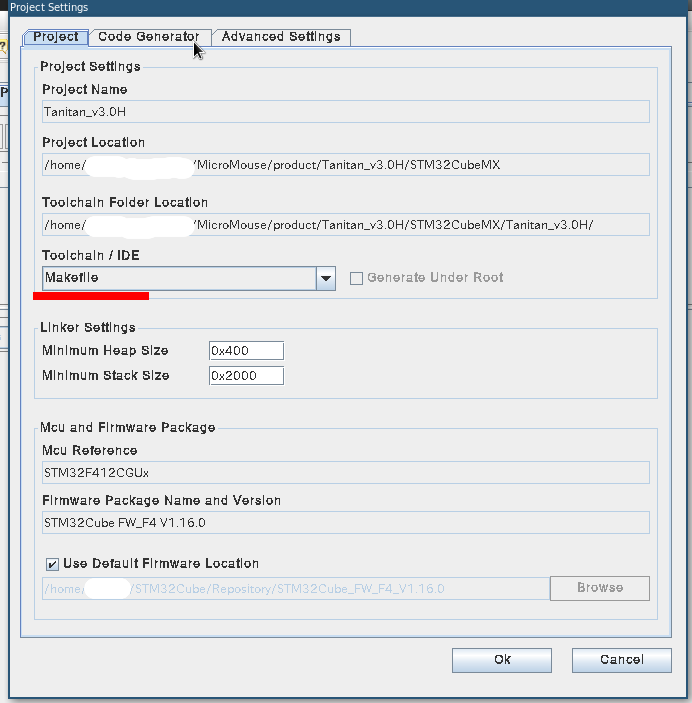
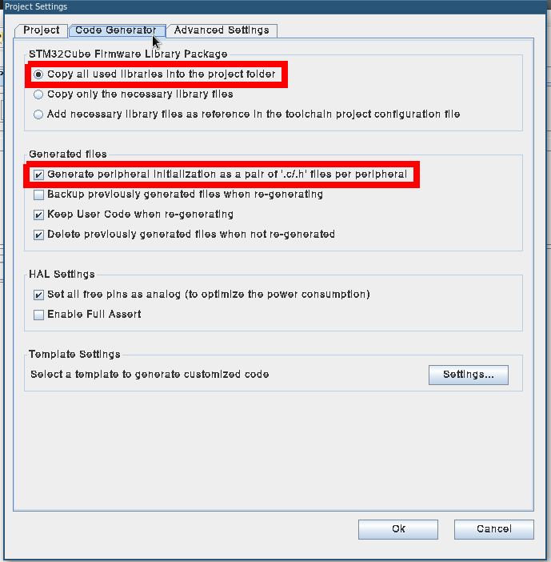

はじめに
STM32の開発を行う際は，いくつかの選択肢があります(ありました)．
- 生レジスタを叩く
- mbedを使う
- SPL(Standard Peripheral Library)を使う
- HAL(Hardware Abstraction Layer) Driversを使う
僕はこれまで，SPLを使って開発を行っていましたが，SPLの開発が終了してしまいました．これ以降に発表されるマイコンではSPLが使えなくなります．
そこで，SPLからHALに乗り換えすることにしました．
この記事では，Linuxで，統合開発環境を使わず，C++(gcc)でHALを使った開発を行う手順を説明します．環境さえ整えばWindowsやMacでも開発できると思います．
おまけとして，複数のFTDIチップを利用する場合のTipsを書こうと思います．
今回僕が使っている環境は，次のとおりです．
- マイコン：STM32F412CG
- 書き込み方法：USART1(USBシリアル変換ICを利用)
- 開発機OS：Arch Linux
準備
STM32CubeMX
まずは必要なファイルを入手します．
- STM32CubeMX
STM32用のコードジェネレータです．今回は，ピン配置の確認・Makefileの生成・サンプルプログラムの生成に利用します． - UM1725: Description of STM32F4 HAL and LL drivers
HAL Driversのマニュアルです．割と見やすいので使い倒しましょう．
どちらも，次のURLから入手することが出来ます．
STM32CubeF4 - Embedded software for STM32F4 series - STMicroelectronics
開発環境
開発環境を整えます．
- arm-none-eabi
- make
- stm32flash
- お好きなテキストエディタ
以上をインストールしておいてください．
Arch Linuxなら次のコマンドでインストールできます．
1 | pacman -S make emacs arm-none-eabi-gcc |
stm32flashの改造
stm32flashのデバイス設定ファイルが2016年5月から更新されておらず，これ以降に発表されたマイコンに書き込むことが出来ません．
そこで，ソースコードを変更してコンパイルし直しました．
今回はSTM32F412を追加してみます．
1 | @@ -42,6 +42,7 @@ static uint32_t p_1k[] = { SZ_1K, 0 }; |
コード生成する
これで環境が整ったので，コード生成します．STM32CubeMXを起動して，順に作業します．
ピン配置を決める
Pinoutタブから，マイコンのピン配置を決めます．左側の機能一覧から割り当てたり，右のピン一覧から決めたりすることが出来ます．大体の操作は見たとおりにできると思います．
1個だけわかりにくかった設定は，エンコーダのAB相入力です．画像の赤枠部分から設定できるので，参考にしてください．

クロックを設定する
STM32CubeMXがクロックの初期化コードを作ってくれます．Clock Configurationタブから，画像の赤枠部分を変更します．HSE(外部クロック)を使う場合は，その周波数も入力しておきましょう．

機能の設定
SPIやTIMなどを利用する場合，パラメータの設定をしておきます．Configurationタブから，なんかいい感じに設定しておきましょう．

出力ファイルの設定
最後に，プロジェクト全体の設定をします．今回の記事で重要な点は，画像の赤線部分です．この通り設定し，出力パスや名前を各自設定しておきましょう．


出力する
では，Generate Codeを実行しましょう．僕の例では，次のようなファイルが出力されました．
1 | . |
Generate Reportを実行すると，今回設定した情報がpdfで吐き出されます．非常に便利なので出力することをオススメします．
C++でコンパイルを通す
さてさて，コードが生成されたところで，g++でコンパイルを通せるように改造していきましょう．
今回の記事では，コード生成し直さないことを前提に進めていきます．そのため，生成されたコードを開発用のディレクトリにコピーしてしまうことをオススメします．
生成コードの中で，次のファイルは使いません．
- Inc 以下の，stm32f4xx_hal_conf.h と stm32f4xx_it.h 以外のファイル
- Src 以下の，stm32f4xx_hal_msp.c と stm32f4xx_it.c と system_stm32f4xx.c 以外のファイル
正確には，あくまで初期設定のサンプルとして参考にするだけで，実装は自分で行うことになります．効率はあまり良くないですが，自動生成のコードがあまり好きではないため，このように進めていきます．
ツールチェインのパスを設定する
自動生成コードそのままでは，コンパイルが通りません．まずはツールチェインのディレクトリを設定します．
1 | ####################################### |
おそらくこの状態でコンパイル自体は通ると思います．
cppファイルをコンパイルできるようにする
今は，コンパイルする.cファイルをすべて列挙してあります．非常に気に食わないので，Srcディレクトリ以下に存在する.c，.cppファイルをすべてコンパイルするように変更します．
1 | ###################################### |
1 | ####################################### |
こんな風に改造することで，ビルドが通ると思います．
C++でコードを書き直す
あとは，好きに書き直すだけです．
自動生成されたコードは(ほとんど)正しいので，僕はそれを参考にしながら機能ごとにクラス化していきました．
リンカエラーに対処する
C++でコンパイルするとリンカエラーがしばしば発生しました．
このあたりはよくわかっていませんが，リンカオプションを付け加えることで対処していました．参考までに僕のリンカオプションを書き残しておきます．
1 | ####################################### |
まとめ
統合開発環境を使わずに，STM32CubeMXの自動生成コードをC++に対応させました．
ぶっちゃけ統合開発環境使った方がお手軽ですが，楽しかったので良しとします．

おまけ
今年作った書き込み基板，その名も「メジロ」です．
書き込み基板です
— taniho (@taniho_0707) 2017年5月29日
↑旧
↓新 pic.twitter.com/7X6CucT0iq
書き込む時に，自動で書き込みモードにして電源を入れてくれます．その後はプログラムを実行し，キーを押すと電源を切ってくれます． pic.twitter.com/6QduXdY3gq
— taniho (@taniho_0707) 2017年6月23日
書き込み基板ですが，USBシリアル変換以外にも様々な機能を搭載しています．その都合で，メジロの中にFT231(USB-USART変換IC)が2個載っています．
Linuxでは/dev/ttyUSB0からUSBデバイスを接続した順番に数字が割り振られていくため，複数のUSBデバイスを接続する際には問題になります．おまけでは，解決方法についてまとめます．
まず，FTDIのサポートページからFT_Progをダウンロード，インストールします．Windows専用なので諦めてパソコンを引っ張り出してきてください．
詳しい使い方はユーザーガイドを見てください．このソフトを使って，複数のFTDIチップのシリアルナンバーを変更します．仮に，2つのチップに”ABCDEFGH”と”12345678”を設定したとします．
では両方ともPCに接続します．正しくシリアルナンバーを設定できていれば，/dev/serial/by-id 以下に
“usb-FTDI_FT230X_Basic_UART_ABCDEFGH-if00-port0”
“usb-FTDI_FT230X_Basic_UART_12345678-if00-port0”
というリンクが張られています．この名前は不変です．/dev/ttyUSBx の代わりにこちらを使うようにしましょう．
結論：便利！！